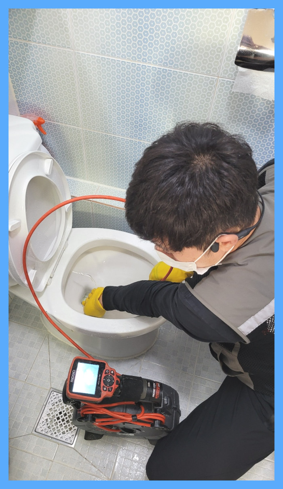
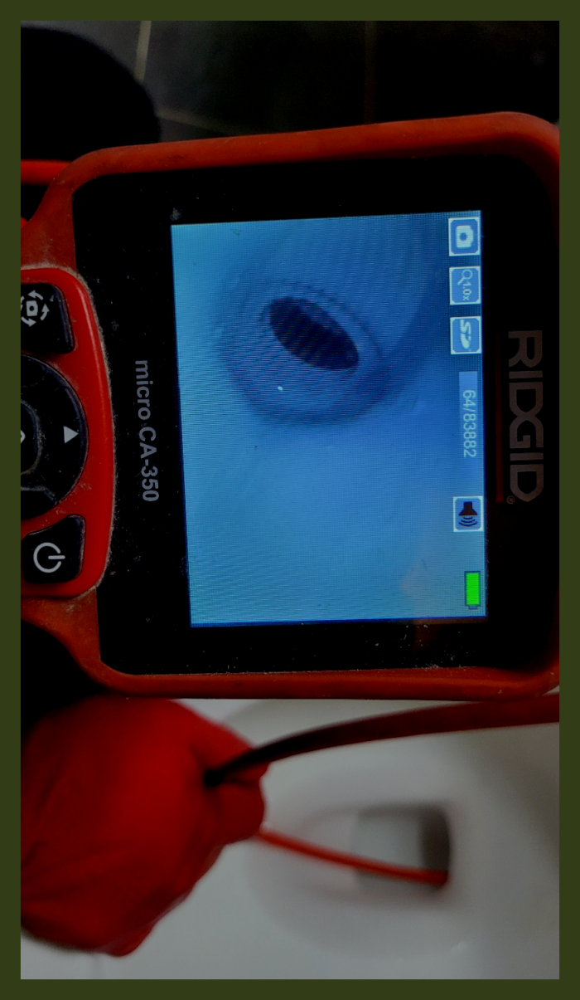
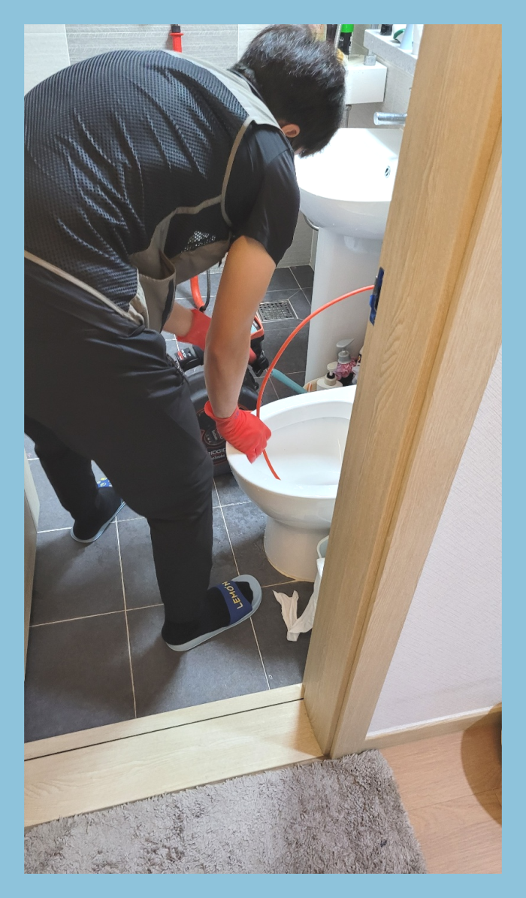
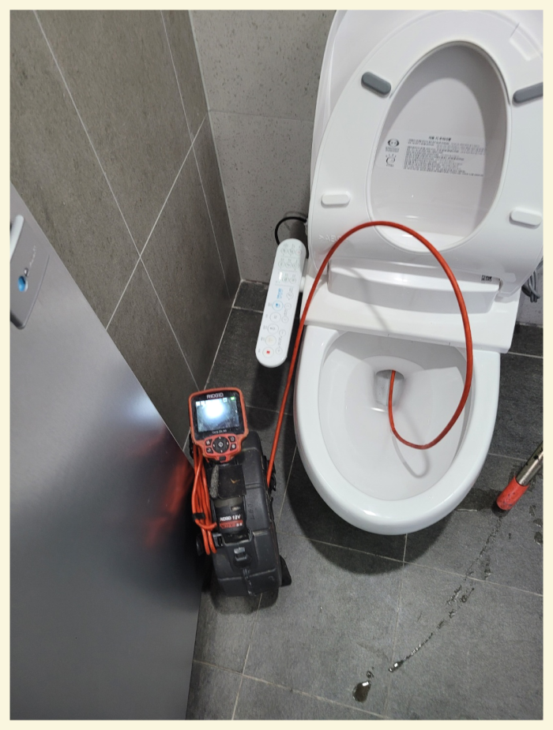
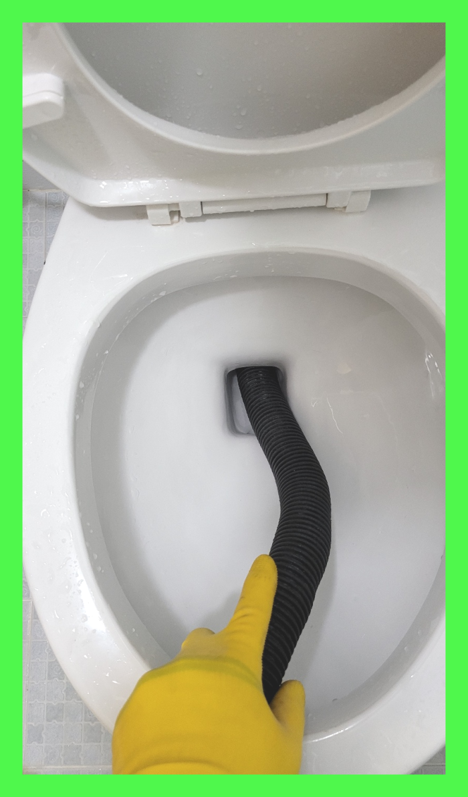
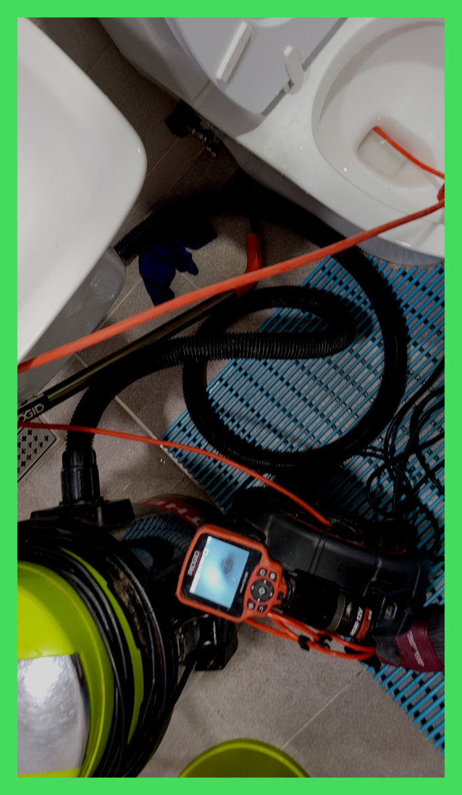

🏠 광주 목현동 대변기막힘 탄벌동 삼동 변기부속 수리 교체 설비
광주 목현동 싱크대막힘 전문 시공 후기

📋 작업 개요
- 위치: 광주 목현동, 목현동, 광주
- 서비스 유형: 싱크대막힘, 변기막힘, 하수구막힘, 배관막힘, 누수수리, 역류해결, 뚫는업체, 배관청소, 고압세척
- 작업 일시: 2024. 2. 19. 17:13
- 업체명: 하수구수사대 (010-5615-2118)
🔍 문제 상황
안녕하세요^^
설비전문업체 "하수구수사대"를 찾아주셔서 감사드립니다.
정말많은 분들께서 뚜러뻥같은 약품을 필수로 구매할만큼 중요한요소로 생각하시는데요 하수관막힘이 심한 경우에는 이 조차도 소용이 없을 때가 많답니다.
광주 목현동 대변기막힘 탄벌동 삼동 변기부속 수리 교체 설비

🔎 원인 분석
💡 전문가 진단: 광주 목현동 대변기막힘 탄벌동 삼동 변기부속 수리 교체 설비
퇴수막힘 문제는 조금씩 문제가 심각해지게 되어 방치하게 되면 추후 역류나 누수와 같은 심각한 상황이 발생하게도 하니 조금이라도 문제가 발생한다면 배관 내부상태를 확인해 보는것이 좋습니다.
배수관의 상태나 구조에 따라서도 추가 비용이 발생될 수 있는 것인데요. 이는 바로 작업량이 늘어나기 때문입니다. 가정이 아닌 카페나 음식점 등과 같은 업체에서의 하수구 막힘 비용은 보통에서 조금 더 나간다고 생각해 주시면 되는데요.
문제점의 원인과 해결방안을 어떻게 실시하였는지 확인시켜 드릴게요! 무엇보다도 배수배관을 해결하는데에 내시경의 존재를 빼놓으면 안되는데요! 여러분들도 업체를 선정하실때 내시경카메라가 업체에 구비되어 있는지 확인하셔야되세요! 무조건적으로 함께해야하는 전문기계라고 설명드릴 수 있죠.
문의하시더라도 먼저 따져라도 보셔야 뒤탈 없이 해결하실 수 있어요. 가능한 투명한 곳으로 찾아보고 있으실 텐데 여유롭지 않으시다면 배출구막힘 이쪽으로 전화 주시는 것을 말씀드려보고 싶어요.
여러 장비를 보유하고 있고 그런 장비를 다 다룰 수 있다면 훨씬 더 효율적인 작업이 가능해집니다. 탐지기를 사용해 대략적인 위치를 확인하고 내시경을 투입해 내부 상태를 점검합니다. 배수관막힘 상태 점검 이후 고압세척 작업이나 파쇄 작업이 필요하다면 거기에 맞는 작업을 실행합니다.
🔧 작업 과정
이러한 배출관작업을 진행하는 곳은 많지 않기에 사전에 견적을 어느 정도 받아보시는 것을 추천드립니다. 그리고 고압세척 장비는 매우 고가 장비기에 이러한 장비를 갖고 있는 업체도 드물고 최신의 장비인지도 확인하고 의뢰하시는 게 좋을 것 같아요.
막힌 상태에서 물을 계속 사용하면 오히려 퇴수역류가 되어 밑에층까지 누수가 되는 일이 생길수 있으니 조심하여야 해요. 일단 물이 고여있기 때문에 셕션장비로 정리를 하고 시작을 합니다.
금액을정하고 방문하는게아닌 현장에내방해서 증상을본다음 얼만큼나오게되는지 견적비용을예상해서 말해드리는데요. 상담이여도 대략적인가격을 말씀드릴수는있으나 자세한비용은배수관cctv카메라로 파악해야되기에 출장비는 안받고있어요
저희배관설비회사의경우 실력자로만 모여있기에 확실하게뚫어버릴수 있다는생각을갖고 설령실패했더라도 비용을요구하지 않고있기때문에 걱정하시지않아도됩니다
이사한 지 얼마 안 돼서 이런 하수막힘이 발생해 착잡한 심정이었던 인천 서구 씽크대뚫음 고객님을 위해 빨리 해결을 하고자 내시경 장비부터하수 배관 속에 넣어 안을 살펴보았습니다.
배수관배관 벽면을 몰라보게 깔끔해졌지만 하부에는 벽면에서 떨어져 나온 이물질 조각들이 많습니다. 이것을 그대로 방치한다면 아래로 흘러내려가서 또 다른 배수관막힘의 원인이 되므로 석션기로 깨끗하게 정리를 해줍니다.
저희는 배수관막힘 원인 해결은 물론이고 왜 이런 문제가 생겼는지 어떻게 하면 재발하지 않는지 맞춤 설루션을 제공해 드립니다. 이물질을 제거하고 배수관배관 전체를 스케일링하면 악취가 사라지고 곰팡이와 같은 세균들을 없앨 수 있습니다. 물 빠짐도 전보다 훨씬 시원해져서 많은 고객분들이 만족하시는데요.


✅ 작업 완료
언제든지 연락받고 있으며 아침이든 저녁이든 달려가고 있는 점을 기억해 주세요. 당일이 어려우실 경우 미리 조정도 해드리기 때문에 시간과 관계없이 만족스러운 결과를 보시길 바랍니다.
#하수구막힘 #하수구뚫음 #하수구역류 #씽크대막힘 #싱크대역류 #오수관막힘 #하수구청소 #욕실하수구막힘 #변기막힘 #하수구뚫는비용 #싱크대수리 #화장실막힘




⚠️ 베란다 누수 및 방수 관리 방법
- ✅ 비가 많이 올 때 창틀 주변이나 아래층 천장에 얼룩이 생기는지 정기적으로 확인해 보세요.
- ✅ 우수관 주변 실리콘 마감이 들뜨거나 깨진 틈새가 있는지 손상 여부를 수시로 체크하세요.
- ✅ 베란다 바닥 타일의 줄눈(메지)이 소실되면 그 틈으로 물이 침투하여 누수가 유발됩니다.
- ✅ 누수 의심 증상 발견 시 방치하면 아래층 손실이 커지므로 즉시 전문가의 진단을 받으십시오.
💡 핵심 정리
- 확실한 장비 작업(내시경 점검 및 샤프트 스케일링)으로 원인을 뿌리 뽑습니다.
- 작업 후 1년 이내에 동일한 부위 재발 시 100% 무상 A/S 서비스를 보장합니다.
- 서울 · 경기 · 인천 전 지역에 24시간 언제든 긴급 출동할 수 있도록 항시 대기 중입니다.
❓ 자주 묻는 질문 (FAQ)
🚨 광주 목현동 싱크대막힘 문제로 고민이신가요?
정확한 원인 진단과 확실한 시공으로 재발 없는 해결을 약속드립니다.
24시간 긴급 출동 | 서울 · 경기 · 인천 전지역 | 1년 내 재발 시 무상 A/S